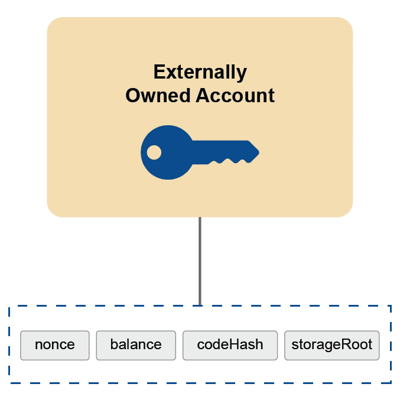
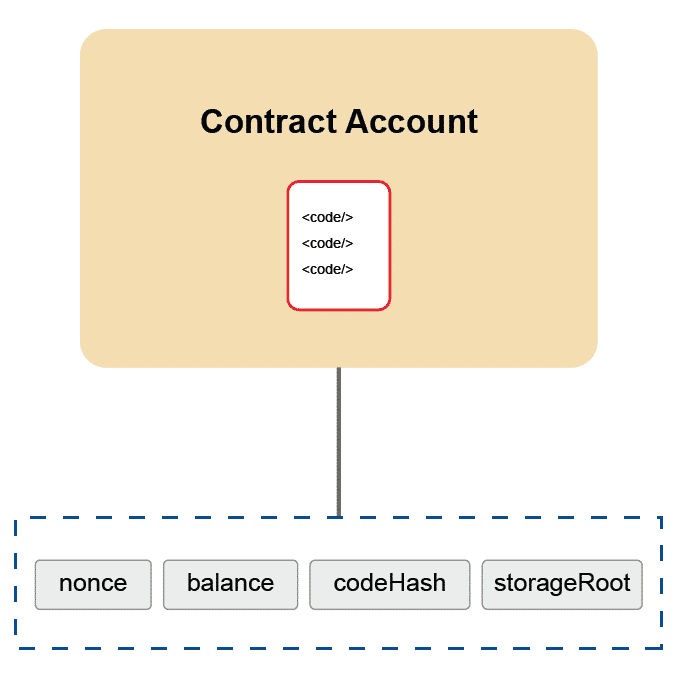

<!doctype html>
<html lang="en">
  <head>
    <meta charset="utf-8">

    <title>Smart Contracts And Decentralized Applications</title>

    <meta name="author" content="Dhruvin Parikh">

    <meta name="apple-mobile-web-app-capable" content="yes" />
    <meta name="apple-mobile-web-app-status-bar-style" content="black-translucent" />

    <meta name="viewport" content="width=device-width, initial-scale=1.0, maximum-scale=1.0, user-scalable=no">

    <link rel="stylesheet" href="../../reveal.js/css/reveal.css">
    <link rel="stylesheet" href="../../reveal.js/css/theme/black.css" id="theme">

    <!-- Code syntax highlighting -->
    <link rel="stylesheet" href="../../reveal.js/lib/css/zenburn.css">

    <!-- Printing and PDF exports -->
    <script>
      var link = document.createElement( 'link' );
      link.rel = 'stylesheet';
      link.type = 'text/css';
      link.href = window.location.search.match( /print-pdf/gi ) ? '../../reveal.js/css/print/pdf.css' : '../../reveal.js/css/print/paper.css';
      document.getElementsByTagName( 'head' )[0].appendChild( link );
    </script>

    <!--[if lt IE 9]>
    <script src="../reveal.js/lib/js/html5shiv.js"></script>
    <![endif]-->

    <style>
      .reveal .slides h1, .reveal .slides h2, .reveal .slides h3 {
        text-transform: none;
      }

      .two-column {
        display: flex;
        flex-wrap: wrap;
      }

      .two-column em {
        margin: 20px;
      }

      .reveal .big-and-bold {
        font-weight: bold;
        font-size: 135%;
      }

      .reveal .shrunk-a-bit {
        font-size: 90%;
      }

      .reveal .shrunk-a-bit pre {
        width: 100%;
      }

      .reveal pre {
        width: 100%;
      }

      .reveal .highlight {
        color: yellow;
        font-weight: bold;
      }

      .reveal .highlightRed {
        color: red;
        font-weight: bold;
      }
    </style>
  </head>

  <body>
    <div class="reveal">
      <div class="slides">

<!------------------------------------------------------->


<section data-markdown><script type="text/template">

## CSBC 2010 - Smart Contracts And Decentralized Applications

### Class 2: Solidity In-Depth - I

*Dhruvin Parikh*

</script></section>

<section data-markdown><script type="text/template">

## Class Plan
* Solidity Smart Contracts
    * Address & Mapping
    * Error handling
    * Inheritance & Abstract contracts
    * Function visibility and Returns
    * Conditional statements 
</script></section>

<section data-markdown><script type="text/template">

## Overflows
  
```
function addOne(uint256 a) public pure returns(uint256) {
    return a + 1;
}
```
  
* `addOne(x)` should always be bigger than `x` right?
  * **No**. The output needs to fit into a `uint256`
  * Adding `1` to the biggest `uint256` value (2<sup>256</sup>-1)
    * Can't fit in a **uint256**
    * So it will wrap (overflow) back to 0
  
</script></section>


<section data-markdown><script type="text/template">
## Error handling
* `require(condition,<string>)`
* `assert()`
* `revert(<string>)`
* `try/catch` (later on)
</script></section>
  
  
  
  
<section data-markdown><script type="text/template">
  
## require
  
```
function addOne(uint256 a) public pure returns(uint256) {
  require(a + 1 > a, "sorry, a is too big");
  return a + 1;
}
```
  
* When you want to check user input is valid
* If first argument evaluates to false, entire transaction is aborted
* Second argument is a user-friendly description of problem
  
</script></section>
  
  
  
<section data-markdown><script type="text/template">
  
## assert
  
```
function addOne(uint256 a) public pure returns(uint256) {
  require(a + 1 > a, "sorry, a is too big");
  uint256 output = a + 1;
  assert(output != 0); // 0 should be impossible
  return output;
}
```
  
* When you are sure something is true, but want to put in a check **just in case you are wrong**
* Don't use it for validating user input (use `require`)
* `assert` is used by special programs that analyze your code so they can prove things about it
  * And no user-friendly message
  
</script></section>
  
  
  
<section data-markdown><script type="text/template">
  
## Underflows
  
<pre class="hljs js">
uint256 balance;
function withdraw(uint256 amount) {
  require(<span class="highlightRed">balance - amount</span> &gt;= 0, "insufficient funds");
}
</pre>
  
* If `amount` is greater than `balance`, the subtraction underflows
* In fact, this require is pointless:
  * *All* `uint256` values are `>= 0` (that's what unsigned means)
  
</script></section>
  


<section data-markdown><script type="text/template">

## Numeric ranges
    
* In general, if values can be controlled by an attacker, make sure you are careful when performing artithmetic on them
  * Multiplication can also overflow
  * `x` is not necessarily positive after this:
    <pre>if (x < 0) x *= -1;</pre>
    * When `x` is most negative integer
</script></section>


<section data-markdown><script type="text/template">

## SafeMath
  
* You'll see contracts that use `safeAdd`, `safeMul`, and `safeSub`
* These are functions that check to see if an overflow has been thrown and fail with an `assert` if so:
  
<pre class="hljs js">
  function safeAdd(uint256 a, uint256 b)
    private pure returns(uint256) {
    uint c = a + b;
    assert(c >= a && c >= b);
    return c;
  }
</pre>
  
</script></section>


<section data-markdown><script type="text/template">

## Exercise

```
// SPDX-Licens-Identifier: MIT
pragma solidity ^0.6.10;

contract TestOverflow {
    function addOne(uint256 a) public pure returns(uint256) {
        require(a + 1 > a, "sorry, a is too big");
        return a + 1;
    }
}
```
What value do you need to provide to variable `a` for overflow?
* Use Remix for testing.
</script></section>

<section data-markdown><script type="text/template">

## Wrapping arithmetic
      
```
pragma solidity ^0.7.0;
contract C {
  function f(uint a, uint b) pure public returns (uint) {
    return a + b;
  }
}
```
1. *What happens on `a = uint(-1)` and `b = 1`?*
</script></section>
  
<section data-markdown><script type="text/template">
  
## Wrapping arithmetic
        
```
pragma solidity ^0.7.0;
contract C {
  function f(uint a, uint b) pure public returns (uint) {
    return a + b;
  }
}
```
1. *What happens on `a = uint(-1)` and `b = 1`?*
`f()` returns `1`. It wraps around.
</script></section>
  
<section data-markdown><script type="text/template">
  
## Wrapping arithmetic
        
```
pragma solidity ^0.7.0;
contract C {
  function f(uint a, uint b) pure public returns (uint) {
      return a + b;
  }
}
```
1. *What happens on `a = uint(-1)` and `b = 1`?*
`f()` returns `1`. It wraps around.
    
2. *Why not revert?*  
</script></section>
  
<section data-markdown><script type="text/template">
  
## Wrapping arithmetic
        
```
pragma solidity ^0.7.0;
contract C {
    function f(uint a, uint b) pure public returns (uint) {
      return a + b;
    }
}
```
1. *What happens on `a = uint(-1)` and `b = 1`?*
`f()` returns `1`. It wraps around.
    
2. *Why not revert?*
  
Because Solidity exposes the underlying EVM behaviour. 
Workaround: "SafeMath" libraries.  
</script></section>

<section data-markdown><script type="text/template">
  
## Checked arithmetic
In 0.8.0 arithmetic operations revert on under/overflow:
```
pragma solidity ^0.8.0;
contract C {
  function f(uint a, uint b) pure public returns (uint) {
    // This addition will revert on overflow.
    // No need for `a.add(b)` using `SafeMath`.
    return a + b;
  }
}
```
</script></section>

<section data-markdown><script type="text/template">
  
## Checked arithmetic
In 0.8.0 arithmetic operations revert on under/overflow:
```
pragma solidity ^0.8.0;
contract C {
  function f(uint a, uint b) pure public returns (uint) {
    // This addition will revert on overflow.
    // No need for `a.add(b)` using `SafeMath`.
    return a + b;
  }
  
  function g(uint a, uint b) pure public returns (uint) {
    // This addition will wrap on overflow.
    unchecked { return a + b; }
  }
}
```
[Read the docs](https://docs.soliditylang.org/en/v0.8.2/080-breaking-changes.html) for breaking changes
</script></section>

<section data-markdown><script type="text/template">

## Address
  
- Ethereum addresses are 20 bytes long
  
</script></section>

<section data-markdown><script type="text/template">

## Types of Ethereum accounts
  
* Externally Owned Accounts (EOA)
  * Normal public/private key-pair accounts (previous courses?)
* Contracts
  * Do not have key-pairs
  * Have "code" written by contract creators
  * No ability to initiate transactions: can only respond to external events
</script></section>


<section data-markdown><script type="text/template">

## Externally Owned Accounts (EOA)



</script></section>

<section data-markdown><script type="text/template">

## Contract Accounts
  

    
</script></section>


<section data-markdown><script type="text/template">

## Accounts in metamask
  
* You may notice that your accounts are the same after you change networks in metamask
* This is normal: An account is just a private key and its corresponding address. It can be used on any network
* You may have a balance on one network and a different balance on another
  
</script></section>


<section data-markdown><script type="text/template">

## Mappings
    
<pre class="hljs js">
  <span class="highlight">mapping(address => uint256) balance;</span>
    
  function deposit() public payable {
    <span class="highlight">balance[msg.sender]</span> += msg.value;
  }
</pre>
    
* Like a "dictionary" or "hash-table" in other languages
* Values are `0` by default
* In this example:
  * Look-up an `address`, get a `uint256`
  * Do we need to worry about overflow here?
    
</script></section>


<section data-markdown><script type="text/template">

## Prefer mappings over arrays
  
* Mappings use less gas
  * Arrays have to update `length`
* You can easily delete a mapping
  * Arrays need special code to swap an item with the last entry, then decrement length
* Main use of arrays is so you can loop over them:
  * If possible, avoid using loops, especially if you don't know how many iterations needed
  
</script></section>


<section data-markdown><script type="text/template">

## `if` statements in solidity
    
```
// SPDX-License-Identifier: MIT
// The above line tells that source code is licensed under MIT
// specify the solidity version
pragma solidity ^0.6.10;

// The contract declaration starts here
contract MyYorkU {
    // declare a function `greetYorkUStudents` that accepts a
    // greeting message
    function greetYorkUStudents(string memory _greeting)
        public pure
        returns (string memory)
    {
        // Compares if `_greeting` equals "Welcome".
        // Throws an error and exits if not true.
        if (
            keccak256(abi.encodePacked(_greeting)) ==
            keccak256(abi.encodePacked("Welcome"))
        ) {
            // If it's true, proceed with the function:
            return "Hi!";
        }
        // a way to throw an error on the function call
        revert("Error: greeting is not as expected");
    }
} // Ends here
```
    
</script></section>

<section data-markdown><script type="text/template">

## constructor
  
<pre class="hljs js">
contract MyContract {
  address owner;
  
  <span class="highlight">constructor() public {
      owner = msg.sender;
  }</span>
  
  function doStuff() public {
      require(msg.sender == owner, "only owner can do stuff");
      // do owner stuff
    }
  }
</pre>
  
* Code that is run only once: when contract is created
* Can take arguments, like a regular function
  
</script></section>


<section data-markdown><script type="text/template">
  
## Function return types
  
<pre>
    function addOne(<span class="highlight">uint256</span> a) public pure returns(<span class="highlight">uint256</span>)
</pre>
  
* Parameters, return values, and variables have types that determine what they can contain
* *uint256*
  * unsigned (can't be negative)
  * integer
  * 256 bits (32 bytes)
* A function can return multiple values  
</script></section>


<section data-markdown><script type="text/template">

## Inheritance

* Solidity supports multiple inheritance. Contracts can inherit other contract by using the <span class="highlight">`is`</span> keyword.
* Function that is going to be overridden by a child contract must be declared as <span class="highlight">`virtual`</span>.
* Function that is going to override a parent function must use the keyword <span class="highlight">`override`</span>.
* Order of inheritance is important.
* You have to list the parent contracts in the order from “most base-like” to “most derived”.
</script></section>


<section data-markdown><script type="text/template">

## Contract cannot inherit ~~circularly~~

```
contract Contract1 is Contract2 {...}
contract Contract2 is Contract3 {...}
contract Contract3 is Contract1 {...}
```

* Contract 1 and Contract 2 cause circular reference
</script></section>


<section data-markdown><script type="text/template">

## What is circular Inheritance?


</script></section>

<section data-markdown><script type="text/template">

## Abstract Contracts

* Criteria for Abstract Contract
  * Function lacking implementation
  
</script></section>


<section data-markdown><script type="text/template">

## Abstract Contracts
  
```
abstract contract MyContract {
  function foo() public {
    owner = msg.sender
  } 
  function abstractFoo();
}
```
    
</script></section>


<section data-markdown><script type="text/template">

## Abstract Contracts
 
* Solely used for describing implementations 
* Allows you to describe implementation in parent and change implementation for children
* Useful for defining properties for children to implement

</script></section>


<section data-markdown><script type="text/template">

## End of Class

</script></section>


<!------------------------------------------------------->


      </div>

    </div>

    <script src="../../reveal.js/lib/js/head.min.js"></script>
    <script src="../../reveal.js/js/reveal.js"></script>
    <script src="../../reveal.js/plugin/zoom-js/zoom.js"></script>

    <script>

      // Full list of configuration options available at:
      // https://github.com/hakimel/reveal.js#configuration
      Reveal.initialize({
        controls: true,
        progress: true,
        history: true,
        center: true,

        transition: 'none', // none/fade/slide/convex/concave/zoom

	math: {
          mathjax: '../lib/MathJax/MathJax.js',
          config: 'TeX-AMS_SVG-full',
	},

        // Optional reveal.js plugins
        dependencies: [
          { src: '../../reveal.js/plugin/markdown/marked.js', condition: function() { return !!document.querySelector( '[data-markdown]' ); } },
          { src: '../../reveal.js/plugin/markdown/markdown.js', condition: function() { return !!document.querySelector( '[data-markdown]' ); } },
          { src: '../../reveal.js/plugin/highlight/highlight.js', async: true, callback: function() { hljs.initHighlightingOnLoad(); } },
          { src: '../../reveal.js/plugin/math/math.js', async: true }
        ]
      });

    </script>

  </body>
</html>